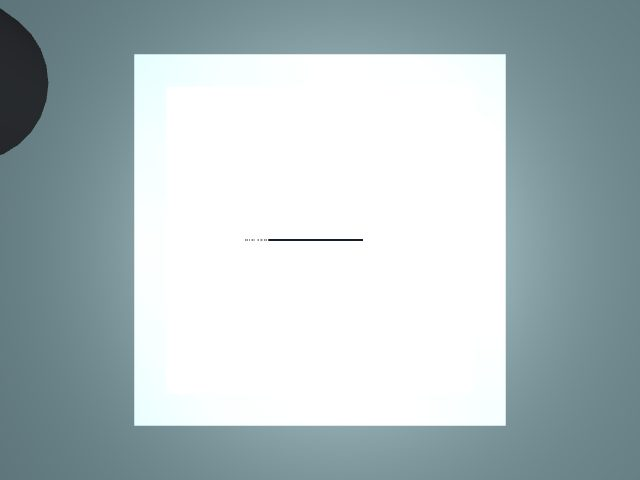

Attempt 1: visible → accept
Visible path coverage: 100%; motion + inspection: 7.37 s

Real MuJoCo motion; simplified chalk shortening. Decisions use camera pixels and the intended path only. Corrections are simulation-only, capped at 0.75 mm. These results do not establish hardware safety or accuracy.
Visible path coverage: 100%; motion + inspection: 7.37 s
Visible path coverage: 0%; motion + inspection: 7.04 s


Visible path coverage: 0%; motion + inspection: 7.48 s


Visible path coverage: 100%; motion + inspection: 7.75 s
Visible path coverage: 0%; motion + inspection: 7.17 s


Visible path coverage: 0%; motion + inspection: 7.22 s


Visible path coverage: 0%; motion + inspection: 7.64 s

Visible path coverage: 0%; motion + inspection: 7.61 s


Visible path coverage: 79%; motion + inspection: 7.05 s

